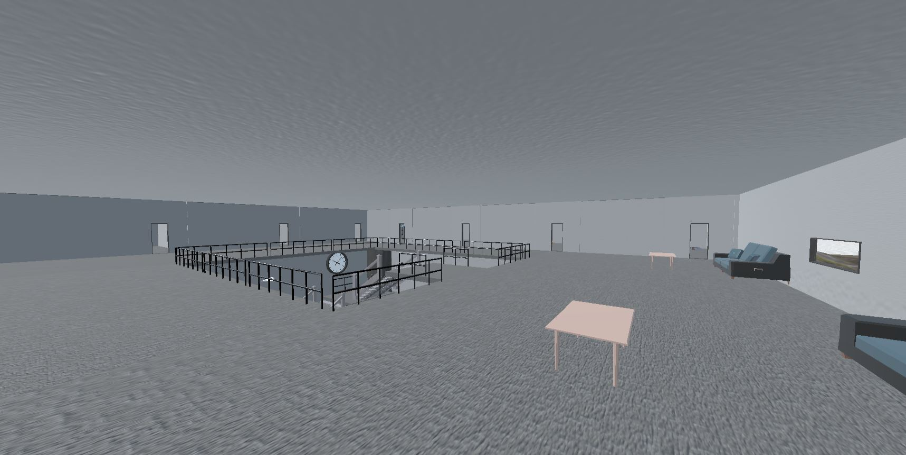
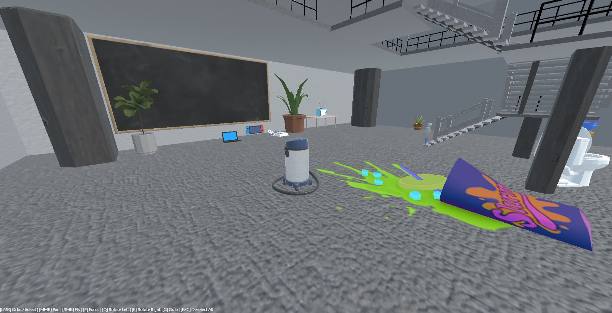
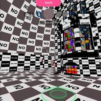
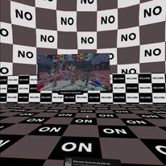
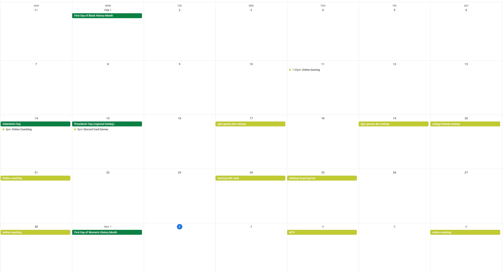

Week 4 Spaces
New Space
 For my space design this week, I put together a nice little building with some areas to hang out in. The main lobby area gives us a large open space where people start off and can all hang out next to each other. Going upstairs, I made an overlook so that folks can split off into a second larger group but aren't visually isolated from the other large group. From there people can go off into their own rooms. Each area has some random objects in them that help people communicate which room they are in or going to go into by discribing the objects in the room but also to fill in the empty space.  I also threw in an easter egg for whoever likes to go on the hunt. My partner's dream was a house party where friends made a mess and spilled some stuff that had to get powdered and vacumed, so this place makes for a great social gathering, To emulate that I made a little spillage and place a vacume close by. What was interesting was that the next day she spilled some stuff in a grocery store that had to get cleaned up the same way! So for space, it means how you divide things up to add or hide groups, places to discover, and how each space feels differently from another.Dream Journal
 Over the weekend I went and visited a room with a few of my class mates, apparently my avatar still looked like a looming dark cloud so I think I fixed that. I wasn't sure if my mic was working but later on I asked and it was, turns out it was just me not hearing them.  I only stayed for a short while since the glitching room textures where starting to give me some motion sickness. It was a pretty interesting experience though, sharing a space with others virtually was gave a very different feeling than just talking on web cam, I think adding the interactivity adds another layer of reality or connectivness.Social Calendar
https://calendar.google.com/calendar/u/0?cid=Y19zaTByZzljczU2YjNrZzV0N3M3NGYydWc5Z0Bncm91cC5jYWxlbmRhci5nb29nbGUuY29t  For this week, I met with my friends I've been helping lose weight again for their weekly check in, they're both now at a loss of 10lbs after about 8 weeks which is pretty great, I started using calendly to help organize things. WIth my weekly gaming session with my one buddy, I tried out a game called Apex Legends for the first time. Turns out I'm really bad at it, but it was pretty fun either way. I also got a chance to join in with my friends playing MTG via webcam, I sat out for a couple games and just chatted in the background since I had some homework to get done for class the next day but it was still nice to hang out with them.home
while (!deck.isInOrder()) {
print 'Iteration ' + i;
deck.shuffle();
i++;
}
print 'It took ' + i + ' iterations to sort the deck.';